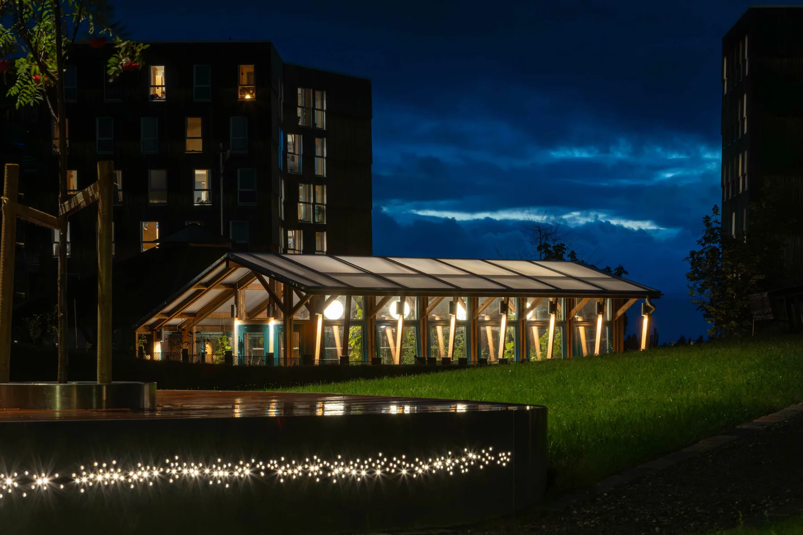
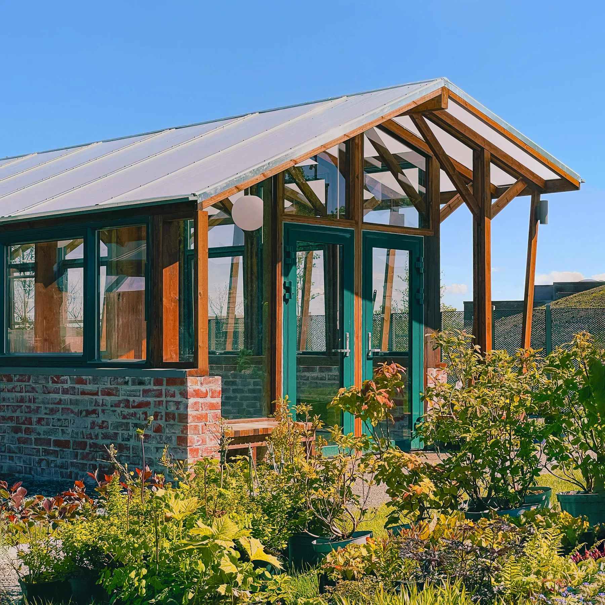
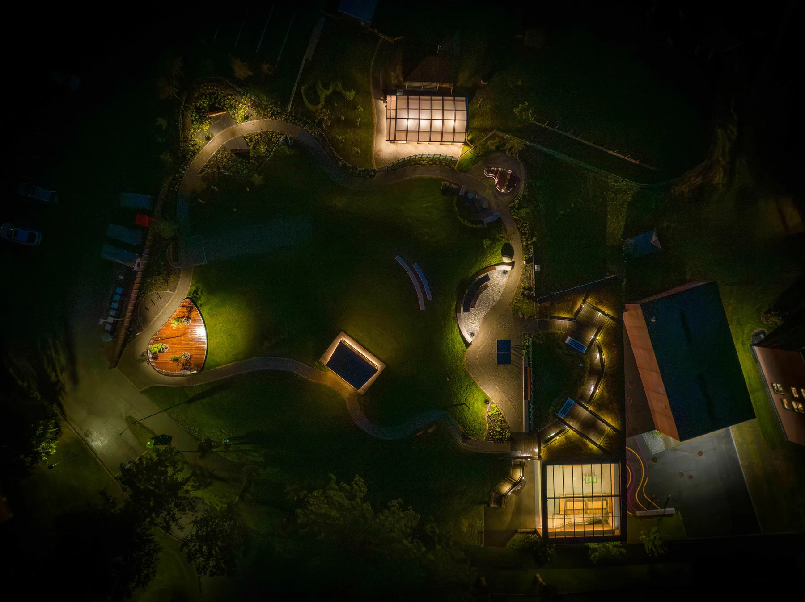
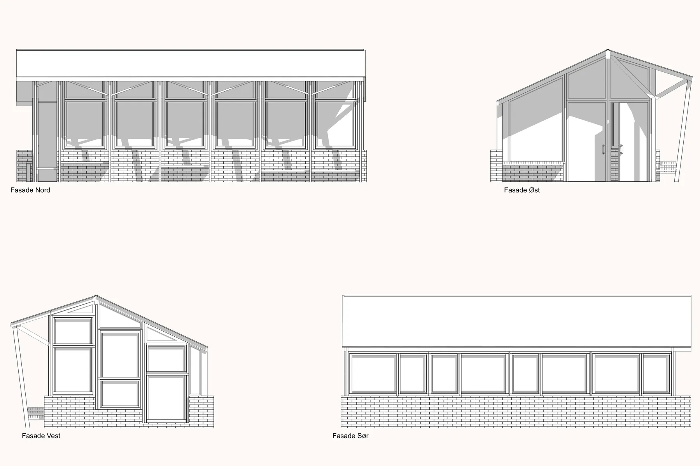
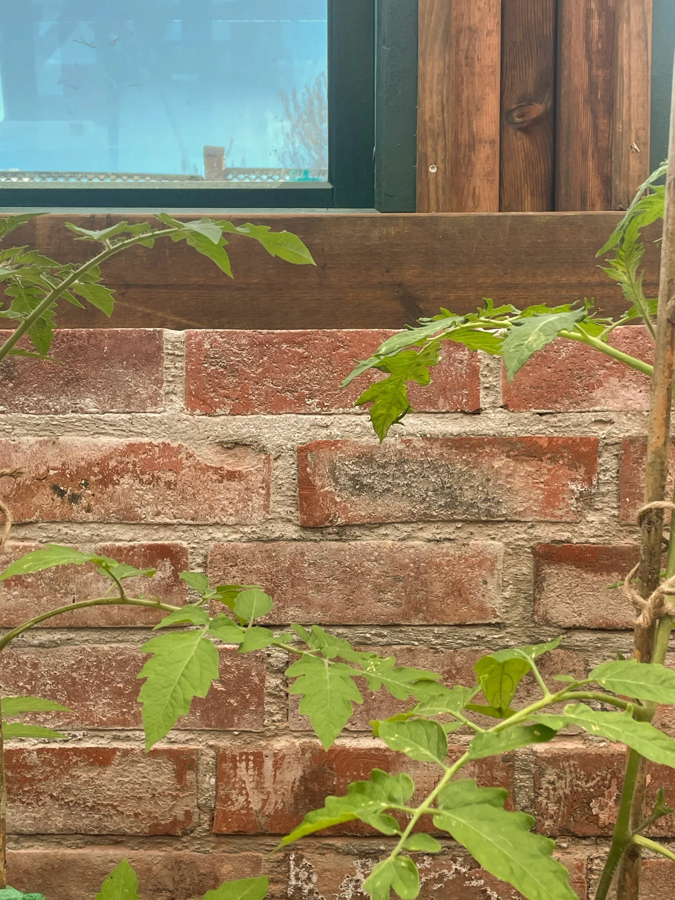
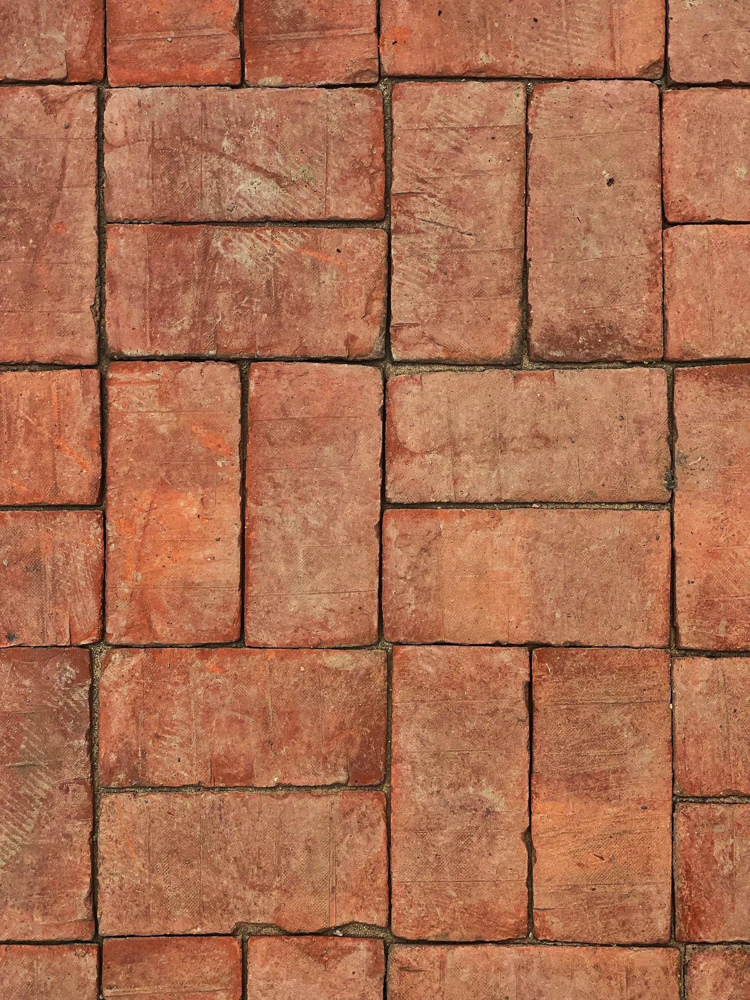
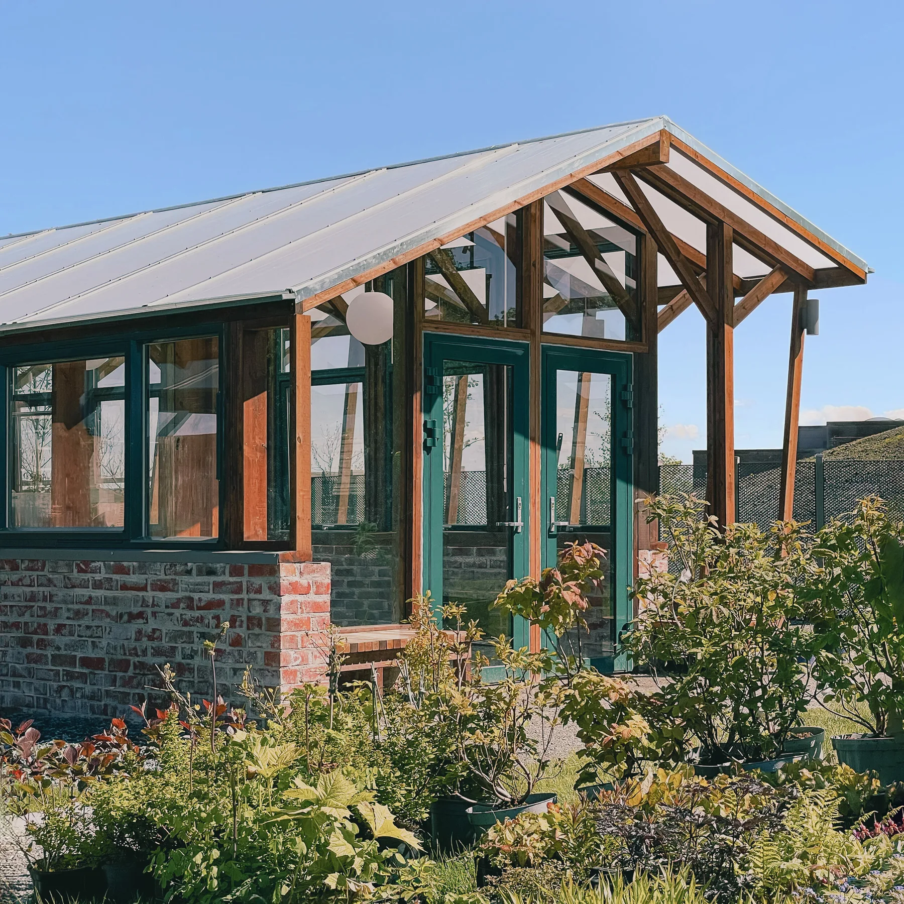
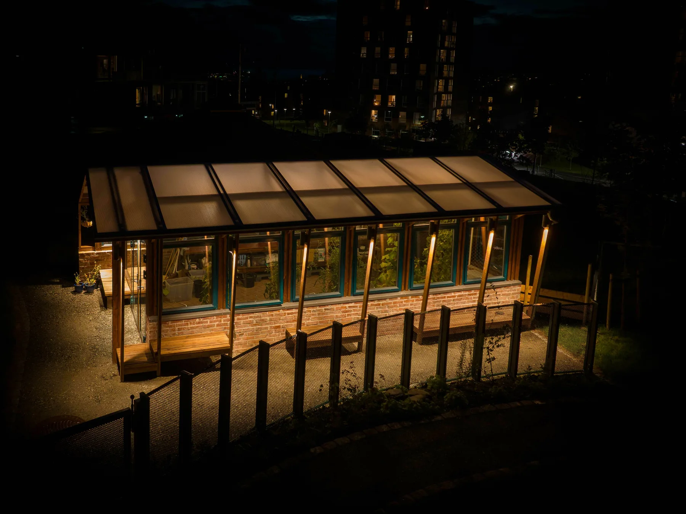
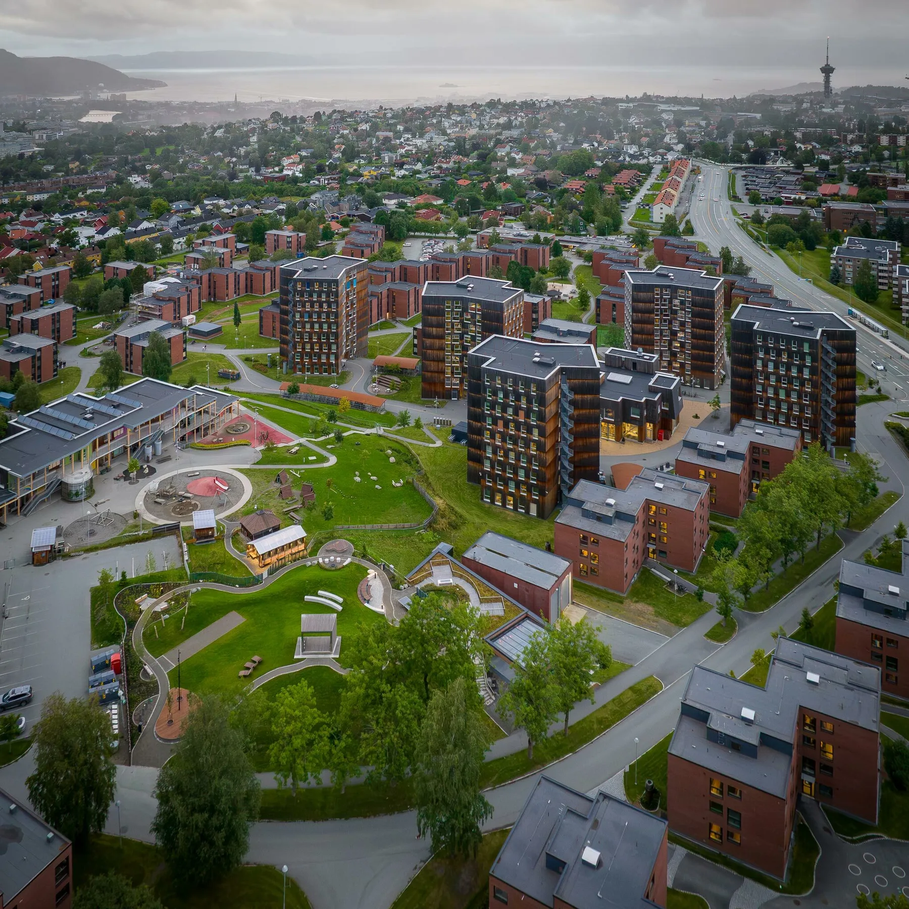

Solhaugen
03Drivhus til barnehage
Helse · rekreasjon · livssyn · Ombruk · transformasjon · NybyggSe bildegalleri

- Byggherre
- SiT
- Planlagt ferdigstilling
- 2025
- Medarbeidere
- Nicolai Birkeland
Om prosjektet
Gjenbrukte vinduer og tegl fra studentboligene inngår i et drivhus på Moholt. Prosjektet knytter barnehagen og studentbyen til en felles park med rom for dyrking, lek og møter.
Bilder & tegninger9 bilder



Forstørr

Forstørr

Forstørr

Forstørr

Forstørr

Forstørr

Forstørr

ForstørrFoto: Svein Sæterbø/Asplan Viak · Foto: Svein Sæterbø/Asplan Viak
La oss begynne med en samtale